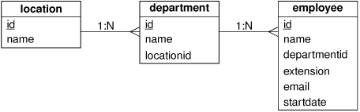
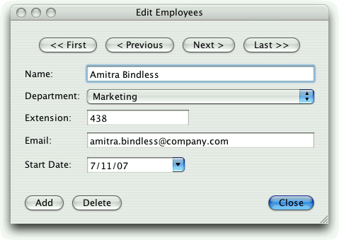

|
|
In this section, we will see how to create a dialog form that displays one record at a time. The dialog can be used to add, edit, and delete individual records, and to navigate through all the records in a table.
We will illustrate these concepts in the context of the Staff Manager application. The application keeps track of which department employees are in, where the departments are located, and some basic information about employees, such as their internal phone extension. The application uses the following three tables:
CREATE TABLE location (
id INTEGER PRIMARY KEY AUTOINCREMENT,
name VARCHAR(40) NOT NULL));
CREATE TABLE department (
id INTEGER PRIMARY KEY AUTOINCREMENT,
name VARCHAR(40) NOT NULL,
locationid INTEGER NOT NULL,
FOREIGN KEY (locationid) REFERENCES location));
CREATE TABLE employee (
id INTEGER PRIMARY KEY AUTOINCREMENT,
name VARCHAR(40) NOT NULL,
departmentid INTEGER NOT NULL,
extension INTEGER NOT NULL,
email VARCHAR(40) NOT NULL,
startdate DATE NOT NULL,
FOREIGN KEY (departmentid) REFERENCES department));
The tables and their relationships are shown schematically in Figure 13.2. Each location can have any number of departments, and each department can have any number of employees. The syntax for specifying foreign keys is for SQLite 3 and may be different for other databases.

In this section, we will focus on EmployeeForm, the dialog for editing employees. In the next section, we will review MainForm, which provides a master–detail view of departments and employees.
The EmployeeForm class provides a drill-down from the main form's summary of employees to a particular employee's full details. When invoked, the form shows the specified employee if a valid employee ID is given, or the first employee otherwise. (The form is shown in Figure 13.3.) Users can navigate through the employees, edit or delete existing employees, and add new employees.

We have provided the following enum in employeeform.h to give meaningful names to the column indexes:
enum {
Employee_Id = 0,
Employee_Name = 1,
Employee_DepartmentId = 2,
Employee_Extension = 3,
Employee_Email = 4,
Employee_StartDate = 5
};
The rest of the header file defines the EmployeeForm class:
class EmployeeForm : public QDialog
{
Q_OBJECT
public:
EmployeeForm(int id, QWidget *parent = 0);
void done(int result);
private slots:
void addEmployee();
void deleteEmployee();
private:
QSqlRelationalTableModel *tableModel;
QDataWidgetMapper *mapper;
QLabel *nameLabel;
...
QDialogButtonBox *buttonBox;
};
To access the database, we use a QSqlRelationalTableModel rather than a plain QSqlTableModel because we need to resolve foreign keys. The QDataWidgetMapper is a class that allows us to map the widgets in a form to the corresponding columns in a data model.
The form's constructor is quite long, so we will review it in parts, omitting the layout code since it isn't relevant.
EmployeeForm::EmployeeForm(int id, QWidget *parent)
: QDialog(parent)
{
nameEdit = new QLineEdit;
nameLabel = new QLabel(tr("Na&me:"));
nameLabel->setBuddy(nameEdit);
departmentComboBox = new QComboBox;
departmentLabel = new QLabel(tr("Depar&tment:"));
departmentLabel->setBuddy(departmentComboBox);
extensionLineEdit = new QLineEdit;
extensionLineEdit->setValidator(new QIntValidator(0, 99999, this));
extensionLabel = new QLabel(tr("E&xtension:"));
extensionLabel->setBuddy(extensionLineEdit);
emailEdit = new QLineEdit;
emailLabel = new QLabel(tr("&Email:"));
emailLabel->setBuddy(emailEdit);
startDateEdit = new QDateEdit;
startDateEdit->setCalendarPopup(true);
QDate today = QDate::currentDate();
startDateEdit->setDateRange(today.addDays(-90), today.addDays(90));
startDateLabel = new QLabel(tr("&Start Date:"));
startDateLabel->setBuddy(startDateEdit);
We begin by creating one editing widget for each field. We also create a label to put beside each editing widget to identify the corresponding field.
We use a QIntValidator to ensure that the Extension line editor will accept only valid extensions, in this case numbers in the range 0 to 99999. We also set a date range for the Start Date editor, and set the editor to provide a pop-up calendar. We do not populate the combobox directly; later on we will give it a model from which it can populate itself.
firstButton = new QPushButton(tr("<< &First"));
previousButton = new QPushButton(tr("< &Previous"));
nextButton = new QPushButton(tr("&Next >"));
lastButton = new QPushButton(tr("&Last >>"));
addButton = new QPushButton(tr("&Add"));
deleteButton = new QPushButton(tr("&Delete"));
closeButton = new QPushButton(tr("&Close"));
buttonBox = new QDialogButtonBox;
buttonBox->addButton(addButton, QDialogButtonBox::ActionRole);
buttonBox->addButton(deleteButton, QDialogButtonBox::ActionRole);
buttonBox->addButton(closeButton, QDialogButtonBox::AcceptRole);
We create the navigation buttons (<< First, < Previous, Next >, and Last >>), which are grouped together at the top of the dialog. Then we create the other buttons (Add, Delete, and Close) and put them inside a QDialogButtonBox, located at the bottom of the dialog. The code that creates the layouts is straightforward, so we won't review it.
At this point, we have set up the user interface's widgets, so now we can turn our attention to the underlying functionality.
tableModel = new QSqlRelationalTableModel(this);
tableModel->setTable("employee");
tableModel->setRelation(Employee_DepartmentId,
QSqlRelation("department", "id", "name"));
tableModel->setSort(Employee_Name, Qt::AscendingOrder);
tableModel->select();
QSqlTableModel *relationModel =
tableModel->relationModel(Employee_DepartmentId);
departmentComboBox->setModel(relationModel);
departmentComboBox->setModelColumn(
relationModel->fieldIndex("name"));
The model is constructed and set up in much the same way as the QSqlTableModel we saw earlier, but this time we use a QSqlRelationalTableModel and set up a foreign key relation. The setRelation() function takes the index of a foreign key field and a QSqlRelation. The QSqlRelation constructor takes a table name (the foreign key's table), the name of the foreign key field, and the name of the field to display to represent the foreign key field's value.
A QComboBox is like a QListWidget in that it has an internal model to hold its data items. We can replace that model with one of our own, and that is what we do here, giving it the relation model that is used by the QSqlRelationalTableModel. The relation has two columns, so we must specify which one the combobox should show. The relation model was created for us when we called setRelation(), so we do not know the index of the name column. For this reason, we use the fieldIndex() function with the field name to get the right index to make the combobox show the department names. Thanks to QSqlRelationalTableModel, the combobox will display department names rather than department IDs.
mapper = new QDataWidgetMapper(this);
mapper->setSubmitPolicy(QDataWidgetMapper::AutoSubmit);
mapper->setModel(tableModel);
mapper->setItemDelegate(new QSqlRelationalDelegate(this));
mapper->addMapping(nameEdit, Employee_Name);
mapper->addMapping(departmentComboBox, Employee_DepartmentId);
mapper->addMapping(extensionLineEdit, Employee_Extension);
mapper->addMapping(emailEdit, Employee_Email);
mapper->addMapping(startDateEdit, Employee_StartDate);
The QDataWidgetMapper reflects one database record's fields into the widgets it is mapped to, and reflects changes made in these widgets back to the database. We can either take responsibility for submitting (committing) changes ourselves, or tell the mapper to do it for us automatically; here we have chosen the automated option (QDataWidgetMapper::AutoSubmit).
The mapper must be given the model to work on, and in the case of a model that has foreign keys, we must also give it a QSqlRelationalDelegate. This delegate ensures that values from the QSqlRelation's display column are shown to the user rather than raw IDs. The delegate also ensures that if the user initiates editing, the combobox shows display values, but the mapper actually writes the corresponding index value (the foreign key) back to the database.
In cases where foreign keys refer to tables with large numbers of records, it is probably best to create our own delegate and use it to present a "list of values" form with a search capability rather than relying on QSqlRelationalTableModel's default comboboxes.
Once the model and delegate are set, we add mappings between the form's widgets and the corresponding field indexes. The combobox is treated just like the other widgets since all the work of dealing with the foreign key is handled by the relation model we have already set on it.
if (id != -1) {
for (int row = 0; row < tableModel->rowCount(); ++row) {
QSqlRecord record = tableModel->record(row);
if (record.value(Employee_Id).toInt() == id) {
mapper->setCurrentIndex(row);
break;
}
}
} else {
mapper->toFirst();
}
If the dialog was called with a valid employee ID, we look for the record with that ID and make it the mapper's current record. Otherwise, we simply navigate to the first record. In either case, the record's data will be reflected into the mapped widgets.
connect(firstButton, SIGNAL(clicked()), mapper, SLOT(toFirst()));
connect(previousButton, SIGNAL(clicked()),
mapper, SLOT(toPrevious()));
connect(nextButton, SIGNAL(clicked()), mapper, SLOT(toNext()));
connect(lastButton, SIGNAL(clicked()), mapper, SLOT(toLast()));
connect(addButton, SIGNAL(clicked()), this, SLOT(addEmployee()));
connect(deleteButton, SIGNAL(clicked()),
this, SLOT(deleteEmployee()));
connect(closeButton, SIGNAL(clicked()), this, SLOT(accept()));
...
}
The navigation buttons are connected directly to the corresponding mapper slots. (If we were using the manual submit policy, we would need to implement our own slots, and in them we would submit the current record and then perform the navigation to avoid changes being lost.) The data widget mapper allows us to edit and to navigate. To add or delete records, we use the underlying model.
void EmployeeForm::addEmployee()
{
int row = mapper->currentIndex();
mapper->submit();
tableModel->insertRow(row);
mapper->setCurrentIndex(row);
nameEdit->clear();
extensionLineEdit->clear();
startDateEdit->setDate(QDate::currentDate());
nameEdit->setFocus();
}
The addEmployee() slot is invoked when the user clicks the Add button. We begin by retrieving the current row since this is lost after submitting. Then we call submit() to make sure no changes to the current record are lost. Although we have set the submit policy to QDataWidgetMapper::AutoSubmit, we must still manually submit. This is because the automatic submit is applied only when the user changes focus—to avoid the overhead of doing a database UPDATE every time the user inserts or deletes a character—and it is possible that the user has edited a field but not tabbed away from it when they click the Add button. Next, we insert a new blank row and make the mapper navigate to it. Finally, we initialize the widgets, and give the focus to the first widget ready for the user to begin typing.
void EmployeeForm::deleteEmployee()
{
int row = mapper->currentIndex();
tableModel->removeRow(row);
mapper->submit();
mapper->setCurrentIndex(qMin(row, tableModel->rowCount() - 1));
}
For deleting, we begin by noting the current row. Then we delete the row and submit the change. We must manually submit deletions since the automatic submit policy applies only to changes to records. At the end, we make the mapper's current index the row following the deleted row—or the last row if it was the last row that was deleted.
The QDataWidgetMapper class makes it easy to develop data-aware forms that display information from a data model. In the example, we used a QSqlRelationalTableModel as the underlying data model, but QDataWidgetMapper can be used with any data model, including non-SQL models. An alternative would have been to use QSqlQuery directly to fill in the form with data and to update the database. This approach requires more work, but it is also more flexible.
In the next section, we will review the rest of the Staff Manager application, including the code that uses the EmployeeForm class developed in this section.
|
|
| Converted from CHM to HTML with chm2web Pro 2.85 (unicode) |